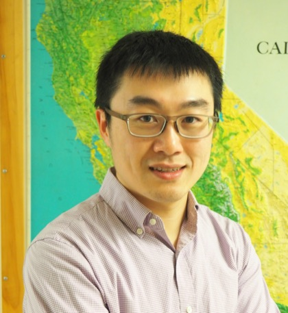

Lingsen Meng
Professor of Geophysics
Earth, Planetary and Space Sciences, UCLA
I am a seismologist. Our group studies how earthquakes start, propagate and stop, with seismic array imaging (back-projection), joint seismic and geodetic finite-fault inversion, and numerical modelling. Recent work includes a global survey of supershear earthquakes, the 2023 Türkiye, 2024 Noto and 2025 Mandalay earthquakes, tsunami source inversion, and methods for checking machine-learning earthquake catalogues.
Research
All topicsRupture physics & supershear
How fast ruptures run, and why some outrun the shear waves: Palu, Mandalay and a global census.
02Back-projection imaging
Tracking high-frequency radiation with seismic arrays: MUSIC, slowness calibration, 3-D and PKIKP back-projection.
03Finite-fault & joint inversion
Slip on multi-segment faults from seismic, GNSS and InSAR data: Maduo, Türkiye, Noto, Mandalay.
04Tsunami
Rapid source characterisation by back-projection, time-reversal and adjoint inversion, and fast surrogates.
05Swarms, slow slip & fibre sensing
Fluid-driven swarms, foreshocks and afterslip, and distributed acoustic sensing (DAS).
06AI for geoscience
Phase picking, verifying machine-learning catalogues, and agent-based seismological workflows.
News
- Jul 2026 New paper accepted in Geophysical Journal International: compressing distributed acoustic sensing (DAS) data for seismology with compressive sensing (Ma, Meng & Lin).
- Jun 2026 Congratulations to Saeed Mohanna on completing his PhD.
- May 2026 New paper in EPSL on swarm cessation and aftershock drivers after the four-year Noto Peninsula sequence (Mohanna et al.).
- Dec 2025 Congratulations to Liuwei Xu on completing his PhD.
- Oct 2025 Our study of the 2025 Mandalay (Myanmar) earthquake, a ~450 km supershear rupture enabled by a bimaterial effect and a favourable energy ratio, published in Science (Xu, Meng et al.).
- Jul 2025 Promoted to Professor of Geophysics at UCLA.
- Aug 2024 Dual-initiation ruptures of the 2024 Noto earthquake encircling a fault asperity at a swarm edge, published in Science (Xu, Ji, Meng et al.).
- Oct 2023 The overall-subshear, multi-segment rupture of the 2023 Mw 7.8 Kahramanmaraş (Türkiye) earthquake, published in Communications Earth & Environment.
Selected publications
All 66 publications-
2025
Science 390, 476–481
-
2024
Dual-initiation ruptures in the 2024 Noto earthquake encircling a fault asperity at a swarm edge ScienceScience 385, 871–876
-
2022
Nature Geoscience 15, 942–949
-
2019
Nature Geoscience 12, 200–205
-
2012
Earthquake in a maze: compressional rupture branching during the 2012 Mw 8.6 Sumatra earthquake ScienceScience 337, 724–726